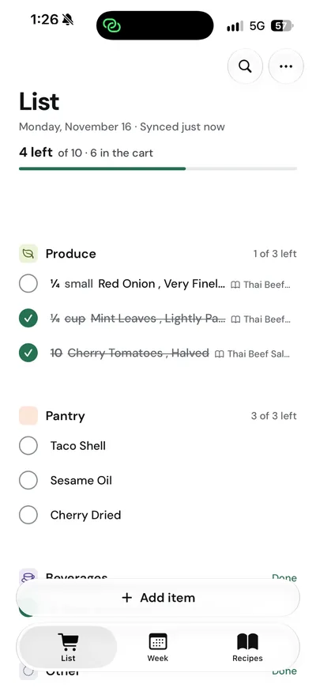
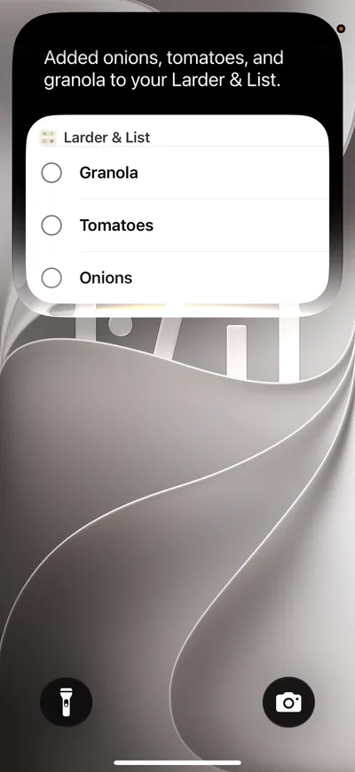
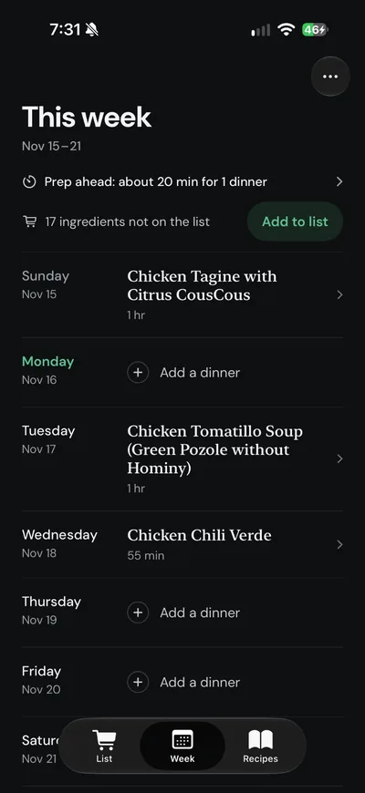
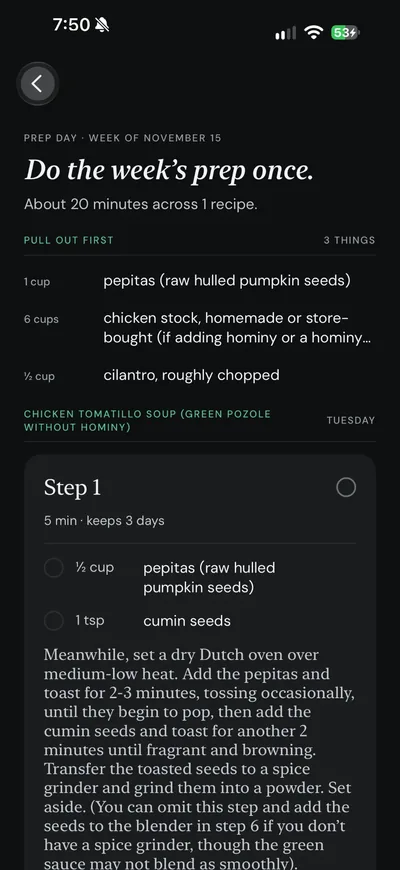
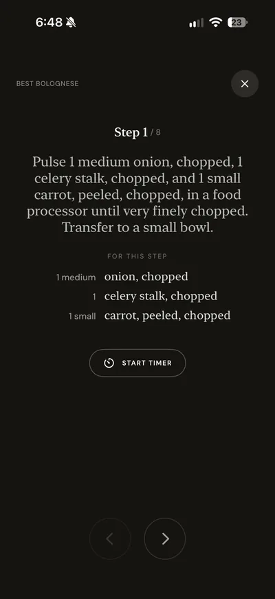
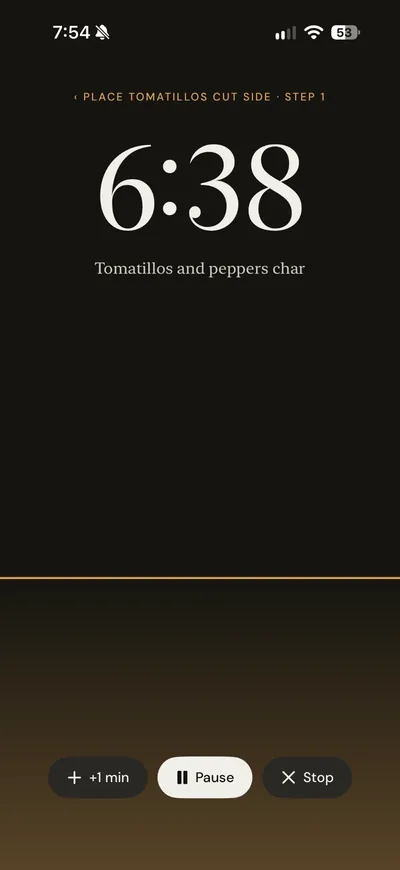
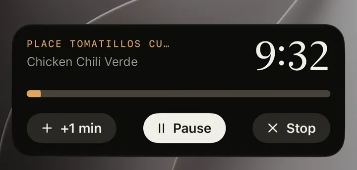

Tell Siri. It’s on the grocery list.
Say it or type it, and Siri with Apple Intelligence adds it, sorted by aisle. One list on one phone or two, beside your recipes and this week’s dinners. Free on iPhone and iPad with iOS 26.2 or later.


One grocery list on two phones. Sorted by aisle.
Add olive oil from the couch and it shows up on your partner’s phone in seconds, over iCloud. Tell Larder & List where something belongs once and it remembers.
- Produce, Dairy, Meat, Bakery, Frozen, Pantry, Beverages, Household
- Scan a barcode, or say “Add onions to Larder & List”
- On Apple Watch and in a Home Screen widget
Recipes from links, posts and pages
Share a post from Instagram, TikTok, YouTube, Pinterest or Facebook, paste a food blog link, or photograph up to 10 cookbook pages. The ingredients, steps and photo come in.
A dinner for each night of the week
-
Pick a dinner for each night
Choose from your own recipes. “Goes with your week” suggests ones that share ingredients, and anything missing goes on the list in one tap.

-
New in 1.9: Prep Day, the week’s prep in one go
Prep Day gathers the make-ahead steps from every dinner, says what to pull out first and how long each thing keeps.

-
New in 1.9: cook one step at a time
Each step in big type with its own ingredients and amounts. Turn the phone sideways to keep them beside the step.

New in 1.9: timers you can read across the kitchen
A running timer fills the screen. Leave the app and it keeps counting on the Lock Screen and in the Dynamic Island, with +1 min, Pause and Stop.


Do we both need the app?
No, it works fully for one. To share, tap Share Household in Settings and send the iCloud invite.
What does the app cost?
Nothing. No in-app purchases, no ads, no subscription.
My partner has an Android phone. Can we share?
No. The app runs on iPhone and iPad only, so you each need one to share a list.
Who can see our lists and recipes?
You and your partner. They live in your iCloud; the developer collects nothing.
Does the list work without a signal?
Yes. It syncs when the phone is back online.
Which devices does the app run on?
iPhone and iPad with iOS 26.2 or later. The Apple Watch app shows the list.